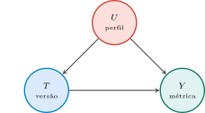
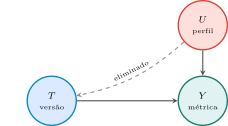
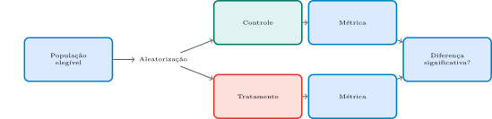
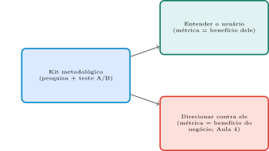

Computação e Sociedade
2026-09-13
Aula 4: a fricção contra o usuário pode ser presença deliberada — um “Stakeholder de negócio” otimiza contra o interesse do usuário (caso Amazon/FTC, “Iliad Flow”).
Hoje: como, concretamente, uma equipe de produto decide o que construir e sabe se uma mudança “funcionou”? Todo esse processo se apoia num kit de ferramentas metodológico — neutro em si, mas de duplo uso.
Um botão “Assinar” muda de azul para laranja. Cliques sobem 8% na semana seguinte. A equipe anuncia vitória.
Aviso
Mas: os 8% a mais eram gente que queria assinar, ou gente confusa que cancelou depois? O efeito segue existindo em um mês, ou era só curiosidade pela cor nova?
“Como saber que uma mudança é boa?” é o fio que atravessa a aula inteira.
O que o clique no botão não conta
Se a única coisa que uma equipe de produto mede é “quantas pessoas clicaram no botão”, o que exatamente essa métrica deixa de fora sobre a experiência real do usuário — e por que uma métrica de clique, sozinha, não decide se a mudança foi boa?
Dica: pense na diferença entre uma ação de curtíssimo prazo (o clique em si) e o que o usuário realmente queria alcançar ao clicar.
Dica
Retomando: o clique é só o começo de uma cadeia de perguntas — os Blocos 2 e 3 mostram as ferramentas certas para responder o resto delas.
Antes de qualquer número, entender o que o usuário tenta fazer, e por quê. Três técnicas, cada uma revela algo diferente.
Entrevistas: conversa guiada por roteiro — revela o que o usuário diz que faz e pensa.
Contextual inquiry: observar a tarefa real, no ambiente do usuário — revela processos tácitos, que ele nem saberia descrever.
Think-aloud: o usuário verbaliza o raciocínio enquanto usa o sistema — revela confusão no momento exato em que ela acontece.
Conversa guiada por roteiro (fixo, ou base com liberdade de aprofundar). Revela o que o usuário diz que faz e precisa.
Aviso
Limite: depende da memória e da capacidade de articulação do usuário — pessoas racionalizam hábitos, esquecem detalhes, respondem o que acham que o entrevistador quer ouvir.
Roteiro começa aberto e neutro (“me conte como você costuma…”) antes de fechado e específico — “você não acha o cadastro confuso?” já entrega a resposta esperada (viés de indução).
Quantas entrevistar? Guest, Bunce & Johnson (2006): numa população razoavelmente homogênea, a maior parte dos temas novos já apareceu depois de cerca de \(12\) entrevistas — saturação teórica.
Dica
Regularidade empírica, não lei fixa. E o entrevistado sabe, desde o convite, que está sendo estudado — sem observação disfarçada.
Observar o usuário fazendo a tarefa real, no próprio ambiente (não perguntar sobre o comportamento — vê-lo acontecer).
Revela processos tácitos: o que o usuário sabe fazer, mas não sabe descrever — nunca precisou explicar aquilo para ninguém.
Dica
Mais cara e lenta que a entrevista, mas revela o que a entrevista sozinha não revelaria.
Beyer & Holtzblatt (1998), Contextual Design: o princípio da parceria — o pesquisador interrompe para perguntar sempre que algo não fizer sentido, o oposto de uma câmera escondida.
Poucas sessões bastam (tipicamente \(4\) a \(10\)): cada uma é longa e densa, ao custo de a equipe se deslocar até o ambiente do usuário.
Aviso
Efeito Hawthorne: ser observado muda o comportamento observado. E, diferente de uma câmera oculta, exige consentimento antes de começar — o usuário sabe que está sendo observado.
Tarefa concreta dentro do sistema (ex.: “cancele o pedido #4521”) — usuário verbaliza o raciocínio em tempo real enquanto age.
Revela pontos de confusão no momento exato em que acontecem, sem depender de memória posterior.
Aviso
Limite: só funciona para tarefas específicas e observáveis dentro do próprio sistema — não revela o contexto de vida mais amplo do usuário.
Nielsen (2000), a partir de Nielsen & Landauer (1993): cerca de \(5\) usuários já revelam boa parte (\(80\)–\(85\%\)) dos problemas de usabilidade — favorece rodadas curtas e iterativas.
Aviso
Regra prática, não garantia: Faulkner (2003) mostrou que a fração encontrada varia bastante conforme quais \(5\) usuários são escolhidos.
Risco do moderador: leading the witness — conduzir a resposta em vez de deixar o usuário explorar e falhar sozinho. A gravação exige consentimento explícito, e o direito de interrompê-la a qualquer hora.
Nas três técnicas, o usuário nunca é estudado sem saber — concorda em ser entrevistado, sabe que está sendo observado, sabe que está sob avaliação.
Dica
Contraste a guardar: no Bloco 4, o experimento de Kramer, Guillory & Hancock (2014) manipula em escala massiva sem que os usuários soubessem que participavam de um experimento.
Cada sessão consome tempo humano real, um usuário de cada vez, de uma dúzia a algumas dezenas de participantes por rodada.
Suficiente para revelar padrões qualitativos — não para decidir, com confiança estatística, se uma mudança melhora um resultado em milhões de usuários.
Dica
É exatamente essa lacuna que a experimentação quantitativa do Bloco 3 preenche.
Uma equipe quer saber por que usuários abandonam um formulário de cadastro no meio do preenchimento.
Ela pode perguntar diretamente aos usuários (“por que você não terminou de se cadastrar?”) ou observar alguns deles preenchendo o formulário ao vivo, sem interromper. Por que a segunda abordagem revelaria algo que a primeira, sozinha, poderia não revelar?
Dica
Retomando: cada técnica qualitativa tem seu próprio ponto cego — a escolha certa depende do que exatamente se quer descobrir.
Um experimento controlado: grupo controle (versão atual) vs. grupo tratamento (versão nova), atribuição aleatória.
Dica
A aleatorização é o que torna o teste um experimento: qualquer diferença ao final só pode ser atribuída à mudança em si, não a alguma característica prévia dos grupos.

Aviso
Sem sorteio, \(U\to T\to Y\) e \(U\to Y\) se misturam: caminho de confusão. Não dá para separar o efeito de \(T\) do efeito de \(U\).

Dica
Sem \(U\to T\), só sobra o caminho direto \(T\to Y\). \(U\) ainda afeta \(Y\), mas vira ruído (distribuído igual nos dois grupos), não viés.

Dica
População → aleatorização → controle/tratamento → métrica de cada grupo → diferença estatisticamente significativa? Cada seta é uma etapa que pode falhar (Bloco 3 mostra três formas de falhar).
Funil — taxa de conversão em cada etapa de um fluxo (quantos chegam à etapa 2, tendo começado na 1, e assim por diante).
Engajamento — tempo de sessão, frequência de retorno, retenção após N dias.
Aviso
Nenhuma das duas é neutra: qual etapa medir, e qual janela de tempo usar, já molda o que a equipe vai chamar de sucesso.
Com poucos usuários no teste, um efeito real pode não ser detectável — o teste conclui “sem diferença”, mesmo quando a mudança realmente importa.
Dica
O caso Kramer et al. (Bloco 5) mostra o extremo oposto: com N = 689.003, até um efeito minúsculo (d = 0,001) vira estatisticamente detectável — o problema muda de “não detecto” para “é real, mas relevante?”
Um ganho logo após a mudança pode ser só curiosidade pela interface nova — não valor real de longo prazo.
Aviso
Medir só a primeira semana de um teste A/B pode confundir “curiosidade passageira” com “melhoria real”, que se dissipa quando a novidade passa.
Toda métrica é, na melhor das hipóteses, um substituto (proxy) do objetivo real — nunca o objetivo em si.
“Tempo de sessão” é um proxy razoável de engajamento — mas otimizar diretamente por ele pode produzir confusão ou vício deliberado (rolagem infinita, notificações incessantes), não valor genuíno.
Lei de Goodhart
“Quando uma medida se torna um alvo, ela deixa de ser uma boa medida.”
As três armadilhas não tornam o teste A/B inútil — pedem leitura metodológica cuidadosa, não veredito automático.
Sortear, comparar, checar significância: o mecanismo não tem preferência por qual métrica \(Y\) entra na comparação — serve para qualquer uma.
Aviso
Um app de notícias testando “tempo de leitura” favorece manchetes alarmistas e rolagem infinita. O mesmo app testando “artigos lidos até o fim, marcados como úteis” favoreceria outro design.
Nenhuma das duas é “errada” estatisticamente — a diferença é de valor, não de método.
Toda métrica de negócio é, na melhor das hipóteses, um proxy do que a equipe quer medir — e o proxy pode ser uma medida pior para alguns grupos do que para outros, mesmo parecendo neutro.
Aviso
Varshney (2022): seguradora de saúde usa custo/utilização como proxy de “quem precisa de mais cuidado”. Só que pacientes negros são mais doentes que brancos no mesmo nível de custo — por razões estruturais de acesso e viés no atendimento.
O algoritmo subestima sistematicamente a necessidade de pacientes negros — sem que raça entre em nenhum cálculo.
Singh (2021): combinar todos os tipos de utilização numa única variável piora o viés racial; manter internações e emergência separadas do resto mantém o viés sob controle.
Dica
Não é “usar proxy” vs. “não usar” — é como o proxy é construído, testado e desagregado por grupo, antes de confiar nele.
Dica
Fogg (Bloco 4) não usa outro método — usa o mesmíssimo teste A/B, apontado deliberadamente para uma métrica que serve ao negócio, não comprovadamente ao usuário.
Um teste A/B com só uma semana de dados
Uma equipe testa um novo design de tela inicial por sete dias e vê um aumento de 15% no tempo de sessão no grupo tratamento. Ela decide lançar a mudança para todos os usuários imediatamente. Que armadilha das discutidas acima essa decisão ignora, e o que a equipe deveria ter feito antes de decidir?
Dica
Retomando: um teste A/B bem lido pede janela de tempo suficiente para separar novidade de valor real — sete dias, sozinhos, não bastam.
Blocos 2–3: um kit de ferramentas neutro — entender e medir o comportamento do usuário.
B.J. Fogg (2003) nomeia o que acontece quando esse kit é usado, deliberadamente, para mudar o comportamento, não só entendê-lo.
Fogg (2003), Introdução, p. 1
“Defino tecnologia persuasiva como qualquer sistema computacional interativo desenhado para mudar as atitudes ou os comportamentos das pessoas.” (tradução livre)
Fogg (2003), p. 5
“‘Captologia’ — acrônimo de ‘computadores como tecnologias persuasivas’. Foca no desenho, na pesquisa e na análise de produtos computacionais criados para mudar atitudes ou comportamentos. Descreve a área onde tecnologia e persuasão se sobrepõem.” (tradução livre)
Zimbardo, Prefácio, p. x
“Captologia… logo se tornaria moeda corrente… para entender como essas novas máquinas podem mudar mentes antigas de formas específicas e previsíveis.” (tradução livre)
Fogg (2003), pp. 7–8 (tradução livre)
Repare: é a mesma mecânica dos Blocos 2–3, levada ao extremo — persistência = teste rodando sem cansar; escala = milhões de usuários ao mesmo tempo, impossível para vendedores humanos.
Fogg (2003), Cap. 9, pp. 212–213
“A resposta não é nem sim nem não. Depende de como a persuasão é usada.” (tradução livre)
Fogg evita a falsa dicotomia — nem “toda tecnologia persuasiva é boa” nem “toda é dark pattern”.
Fogg (2003), Cap. 9, pp. 213–218 (tradução livre)
Fogg (2003), pp. 217–218
“Esperamos que a persuasão ética inclua empatia e reciprocidade. Mas, com tecnologia interativa, não há reciprocidade emocional.” (tradução livre)
Fogg (2003), p. 218
“Computadores… não podem de fato arcar com a culpa; não são agentes morais.” (tradução livre)
Dica
A responsabilidade continua humana — rastreável até quem escolheu a métrica-alvo (o “Stakeholder de negócio” da Aula 4, Bloco 2).
Persuadir é sempre manipular?
Um aplicativo de exercícios usa notificações persistentes, dados sobre seu histórico de treino, e uma interface pensada para incentivar você a manter uma rotina saudável. Isso é tecnologia persuasiva, na definição de Fogg? E isso, sozinho, já a torna antiética?
Dica
Retomando: persuasão tecnológica não é sinônimo de manipulação — mas as mesmas seis vantagens que a tornam poderosa em favor do usuário também a tornam poderosa contra ele. O Bloco 5 mostra um caso real dessa bifurcação.
Três pesquisadores (Facebook + Cornell) publicam na PNAS — uma das revistas científicas mais prestigiadas do mundo — o exemplo mais completo desta aula: método e bifurcação ética no mesmo estudo.
Kramer et al. (2014), p. 8788
Dois experimentos paralelos: exposição a conteúdo positivo reduzida, ou exposição a conteúdo negativo reduzida, no Feed de Notícias.
População elegível = usuários do Facebook em inglês.
Aleatorização = decide quem entra em cada grupo.
Tratamento = supressão parcial de posts emocionais no Feed.
Métrica = proporção de palavras positivas/negativas nos posts seguintes da própria pessoa (via software LIWC).
Kramer et al. (2014), p. 8790
“Tamanhos de efeito… pequenos (d = 0,001)… mas, na escala do Facebook, isso corresponderia a centenas de milhares de expressões emocionais em atualizações de status por dia.” (tradução livre)
Dica
Exatamente as vantagens 3 e 5 de Fogg (grandes volumes de dado + escalar facilmente) operando juntas: irrelevante por indivíduo, relevante em agregado.
Kramer et al. (2014), p. 8789
“Isso era consistente com a Política de Uso de Dados do Facebook, à qual todos os usuários concordam antes de criar uma conta, constituindo consentimento informado para esta pesquisa.” (tradução livre, grifo nosso)
Compare com o padrão de um comitê de ética acadêmico (IRB): consentimento informado e específico, com possibilidade real de recusa sem custo — nenhuma das três características presentes aqui.
Consentimento Não é Clicar numa Caixinha: Relatório Belmont (1979): o princípio de respeito pelas pessoas exige divulgação, compreensão, voluntariedade e competência — quatro coisas, não uma.
Aviso
Termos de Uso podem satisfazer divulgação (tecnicamente) — mas não compreensão (quase ninguém lê um documento de milhares de palavras), nem voluntariedade específica para um experimento futuro desconhecido.
Princípio de justiça do Belmont: atenção redobrada a populações vulneráveis — menor capacidade real de recusar, sem custo.
Dica
“Aceitar” os Termos de uma rede da qual se depende para trabalho, família ou renda não tem o mesmo peso de voluntariedade que aceitar um serviço facilmente substituível — mesmo sendo o mesmo clique.
A Reação da Própria PNAS: O artigo, recuperado diretamente do PDF original, traz dois avisos editoriais anexados após a publicação: uma correção e uma “Expressão Editorial de Preocupação”.
Dica
Levantando exatamente a questão de consentimento e possibilidade de recusa que a aula discute.
Exemplo textual do método (teste A/B, hipótese, aleatorização, significância — Bloco 3).
Exemplo textual da bifurcação ética da captologia (Bloco 4) — “afetar emoções sem ser afetado por elas”, testado em quase 700 mil pessoas que nunca souberam que estavam num experimento.
Termos de Uso bastam como consentimento?
Se concordar com os Termos de Uso de uma rede social, anos antes, constitui consentimento informado para qualquer experimento futuro que a empresa decida rodar dentro do produto, o que exatamente esse argumento elimina da definição usual de consentimento informado (específico, com possibilidade real de recusa)?
Dica
Retomando: o caso Kramer et al. expõe a lacuna entre “consentir com um documento genérico” e “consentir especificamente para ser sujeito de pesquisa” — lacuna que as normas acadêmicas de IRB existem justamente para fechar.
Entrevistas, contextual inquiry, think-aloud, teste A/B, funil, engajamento — um único kit, que se bifurca dependendo de uma escolha que não está na ferramenta.
Dica
A escolha: que métrica se otimiza, e a favor de quem.

Dica
Mesmo kit, mesmas ferramentas — a bifurcação nasce da métrica escolhida e de quem ela beneficia, não de nenhuma técnica em si.
1. Que métrica está sendo otimizada? Permanência de longo prazo alinha melhor com o usuário do que ação imediata e manipulável.
2. A métrica representa o usuário, ou o negócio? Podem coincidir (app de exercícios que retém por saúde real) ou divergir (feed que retém por engajamento compulsivo).
3. O usuário sabe que está sendo testado? O caso Kramer et al. mostra o limite: sem notificação específica nem opção real de recusa.
4. Existe saída simétrica à entrada? Como vimos na Aula 4, Bloco 5, a assimetria de fricção entrada/saída é o sintoma visível de uma métrica otimizada contra o usuário — sempre validada por um teste A/B por trás.
Dica
A bifurcação não está na ferramenta — está na métrica escolhida e na transparência com quem está sendo estudado.
Lendo a instrumentação de um app real
Escolha um aplicativo que você usa todos os dias. Aplicando o checklist desta síntese, você consegue dizer, com alguma confiança, que métrica ele provavelmente otimiza — e se essa métrica está mais alinhada ao seu próprio interesse ou ao do negócio por trás do app?
Dica
Retomando: o mesmo checklist que ajuda a ler um app também ajuda a projetar um — a escolha da métrica é, ela mesma, uma decisão ética, não um detalhe técnico neutro.
1. O kit qualitativo? Entrevistas revelam o dito; investigação contextual revela o tácito; think-aloud revela a confusão em tempo real — nenhuma escala sozinha.
2. Quando um A/B engana? Amostra pequena, efeito novidade não descartado, métrica-proxy sujeita a gaming — significância estatística não é garantia de leitura correta.
3. Tecnologia persuasiva? Sistema desenhado deliberadamente para mudar atitude/comportamento (Fogg) — persistência, anonimato, volume, modalidades, escala e alcance dão vantagem sobre persuasores humanos.
4. Onde fica a bifurcação? Não na ferramenta — na métrica escolhida e na transparência com quem é estudado.
5. Responsabilidade sem consentimento específico? Kramer et al. mostra a lacuna entre Termos de Uso genéricos e consentimento informado real — reconhecida, depois do fato, pela própria PNAS.
Dica
Decisões de método mudam o comportamento do usuário de forma mensurável — hoje vimos como e por quê.
O que mais custa, sem ninguém decidir explicitamente?
Esta aula mostrou que decisões de método e métrica têm consequência real sobre o comportamento do usuário. Que outro tipo de decisão, aparentemente “só técnica” ou “só de engenharia”, você imagina que também tem um custo real fora do próprio código — um custo que ninguém precisou “decidir” explicitamente para que ele existisse?
Dica: pense em decisões sobre onde um sistema roda, quantos serviços ele usa, ou por quanto tempo dados ficam armazenados — nenhuma delas é uma decisão “de comportamento do usuário”, mas todas têm consequência real em outro domínio.
Dica
Ponte para a Aula 6: se decisões de método e métrica já mudam o comportamento do usuário assim, decisões de arquitetura — quantos serviços, onde rodam, como escalam — têm também um custo material e ambiental real. É por aí que a Aula 6 continua a Parte 2 do curso.
UNICAMP — Instituto de Computação